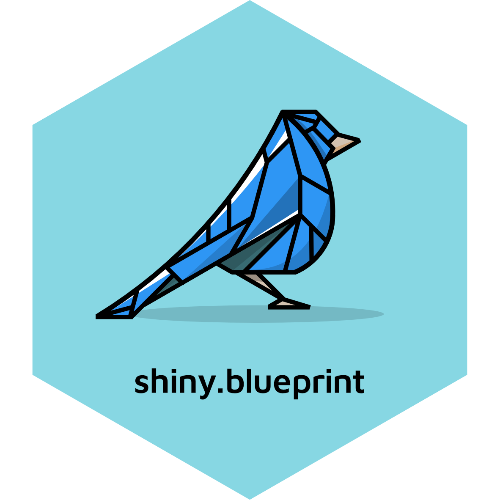

shiny.blueprint 
Palantir’s Blueprint for Shiny Apps
Why shiny.blueprint?
We believe that a great UI plays a huge role in the success of application projects. shiny.blueprint gives your apps:
- a beautiful, professional look;
- a rich set of components easily usable in Shiny;
- fast speed of development that Shiny is famous for.
To see shiny.blueprint in action check out the Blueprint Showcase app with all the available components and R usage examples.
Installation
Stable version:
install.packages("shiny.blueprint", dependencies = TRUE)Development version:
remotes::install_github("Appsilon/shiny.blueprint", dependencies = TRUE)With dependencies = TRUE the suggested packages (required to run some examples) will be installed in addition to mandatory dependencies.
Quick start
Here’s how to create a basic shiny.blueprint app:
library(shiny)
library(shiny.blueprint)
shinyApp(
ui = tagList(
Switch.shinyInput(
inputId = "animate",
value = TRUE,
label = "Animate"
),
reactOutput("progress")
),
server = function(input, output) {
output$progress <- renderReact({
ProgressBar(animate = input$animate)
})
}
)The majority of Blueprint components are available in shiny.blueprint. Start typing shiny.blueprint:: in RStudio to see all available components. Visit the Blueprint docs to see what arguments (props) can be passed to the components.
Examples
All components have usage examples in R. Type ?shiny.blueprint::ComponentName to see the code or shiny.blueprint::runExample("ExampleName") to launch it. Run this function without arguments to see a list of all available examples.
A showcase application with all components can be launched with shiny.blueprint::runExample("showcase") or by visiting this link.
Appsilon

Appsilon is a Posit (formerly RStudio) Full Service Certified Partner.
Learn more at appsilon.com.
Get in touch opensource@appsilon.com
Explore the Rhinoverse - a family of R packages built around Rhino!